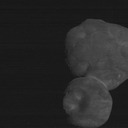
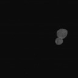
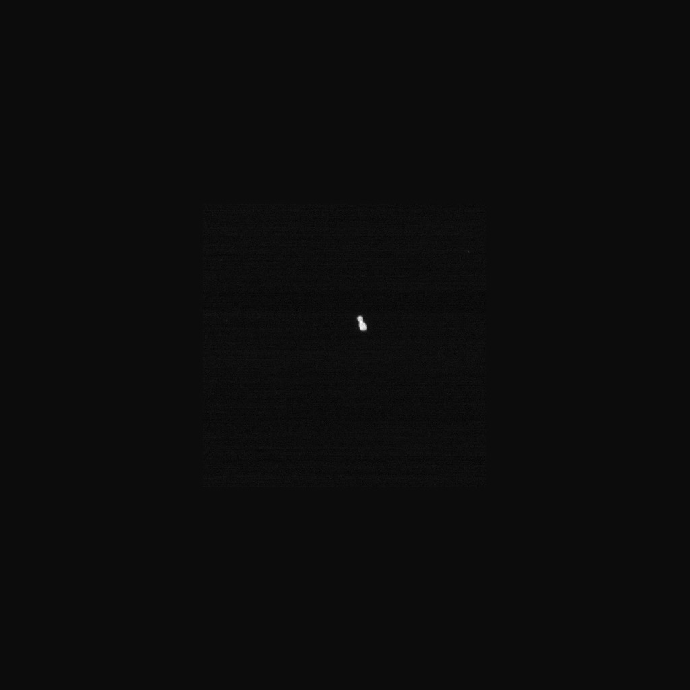
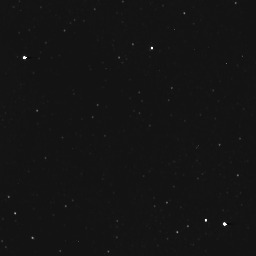
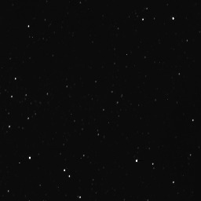

Looking like a snowman you would find a small toddler creating in a park, Arrokoth is the furthest and most primitive object in our solar system.
    | Name | Feature | Named After |
|---|---|---|
| Wenu Lobus | the larger lobe of Arrokoth, provisionally "Ultima" | wenu, the Mapudungun word for 'sky, above' |
| Weeyo Lobus | the smaller lobe, provisionally "Thule" | 𞤱𞤫𞥅𞤴𞤮 weeyo, the Pulaar word for 'sky' |
| Akasa Linea | the bright ring on the neck between the lobi | আকাশ akaś, the Bengali word for 'sky' |
| Ka'an Arcus | the circular linea (the "Road to Nowhere") in the center of Wenu | ka'an, the Mayan word for 'sky'; near homonym for 'snake' |
| Sky | the large compaction crater on Weeyo | The English word 'sky' |